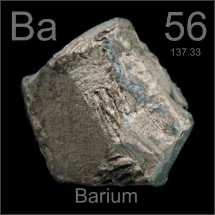

HOME
PREVIOUS
NEXT

Barium
Atomic Weight: 137.327
Density: 3.51 g/cm3
Melting Point: 727 °C
Boiling Point: 1870 °C
Barium makes many people think of enemas, unfortunately. They're recalling barium sulfate, an excellent x-ray contrast medium. Barium in pure form is a metal, used as a "getter" in high-vacuum components.